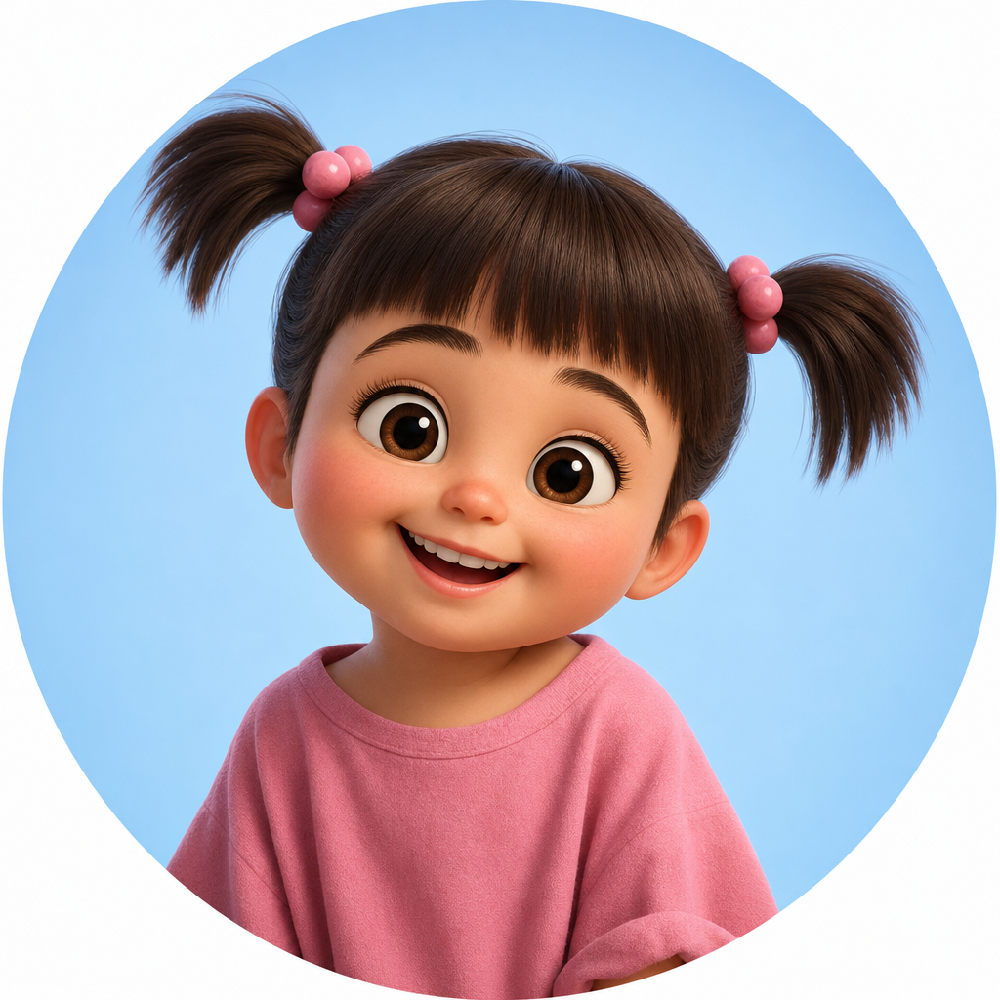
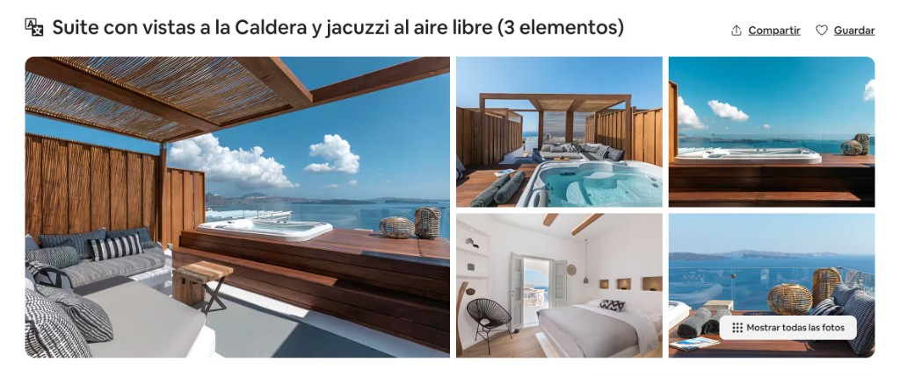
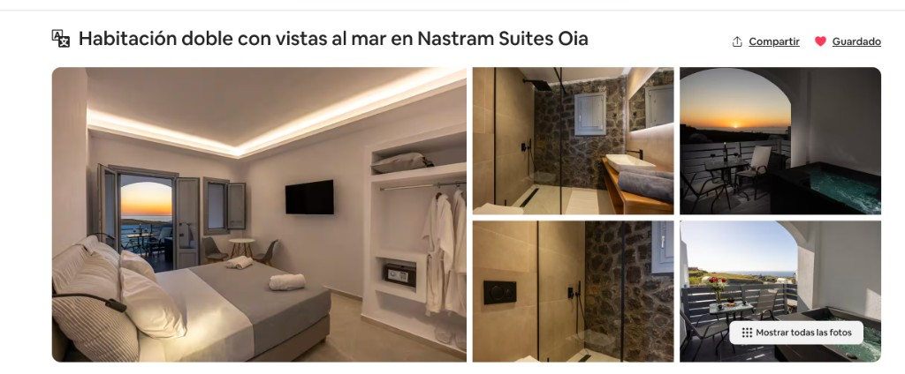

Expediente 1 · El tipo de escapada
Lee el parte de la misión: 27 °C, índice UV alto, brisa de 18 nudos y cota máxima: 0 m.
¿Qué expediente encaja con todos los datos, Boo?

Misión secreta para Boo
Reúne las pistas, prepara la maleta y descubre el destino que he guardado para nosotros.
1 de 8 pruebas
Expediente 1 · El tipo de escapada
¿Qué expediente encaja con todos los datos, Boo?
Expediente 2 · El mapa del mundo
El continente está entre el Atlántico, el Ártico y el Mediterráneo.
Expediente 3 · La forma del destino
No es un continente. No es una península. No es una ciudad.
¿Qué forma geográfica tiene nuestro destino?
Expediente 4 · La maleta de Boo
Elige cuatro objetos que encajen con las pistas que has descubierto.
Prueba 1 · La sopa de letras
La palabra está escondida en línea recta: horizontal, vertical o diagonal.
Prueba 2 · La mesa del investigador
No elijas lo bonito: elige lo que encaje con una isla griega nacida del fuego.
Prueba 3 · El detalle arquitectónico
No son castillos ni rascacielos.
Son la silueta más reconocible de las postales del destino.
Expediente completo · Boo
Tipo de viajeCosta y sol
ContinenteEuropa
FormaIsla
EquipajeBañador, cámara y protección solar
EvidenciasGastronomía, cúpulas y paisaje volcánico
Todo está listo. Solo queda abrir tu sorpresa.
Última decisión, Boo
Las dos opciones tienen vistas increíbles. ¿Cuál te pide más una escapada juntos?

Opción 1
Terraza privada, jacuzzi al aire libre y panorámica abierta al mar para terminar el día viendo el atardecer.
Ver anuncio en Airbnb ↗
Opción 2
Habitación doble tranquila, detalles de piedra y una terraza para contemplar el mar y el atardecer de Oia.
Ver anuncio en Airbnb ↗Nuestro próximo capítulo
Nos vamos a
18 — 20 de septiembre
Vuelo y hotel incluidos